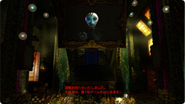
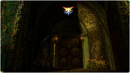
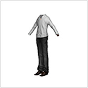
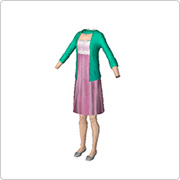
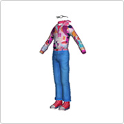
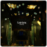

From Friday, August 6th, the PlayStation®Home (PS Home) original "Liars' Minority Game" will be held.
 If you are in the lounge at the start of the game, you can see the production using the central screen and the home reward of the corresponding time.
Participants will make a minority decision.
Everyone who votes for the option with the fewest votes will receive a home reward for the option.
This game will be played three times a week until January 10, 2011 (Monday).
Please wait for the game to start in front of the central screen of the LIAR GAME lounge.
Before the game starts, a telop will be played at the top of the screen in the center of the lounge to inform you that the game has started.
 You can move to the polling place from this special corner in the lounge. You can participate in the game at any time during the voting period and vote as many times as you like.
When the choices are displayed, the game is about to start. Choose the option that offers the home reward you want and vote.
Every Friday 21:00 Announcement of Choices and Home Rewards Voting Starts
Every Saturday 19:30 Voting Deadline
21:00 Results Announcement
Every Sunday 21:00 Announcement of Choices and Home Rewards Voting Starts
Every Monday 19:30 Voting Deadline
21:00 Results Announcement
Every Tuesday 21:00 Announcement of Choices and Home Rewards Voting Starts
Every Wednesday 19:30 Voting Deadline
21:00 Result Announcement
* Because maintenance may be urgent, please vote with more time than the deadline.
We have prepared multiple home rewards such as costumes worn by the main characters in the movie "Liar Game The Final Stage" and key items in the original.



There are several other home rewards available.

LIAR GAME Lounge
This lounge reproduces the stage of the movie "Liar Game The Final Stage", "Garden of Eden".